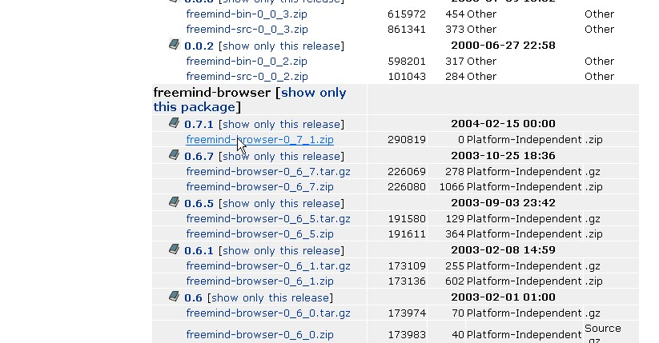
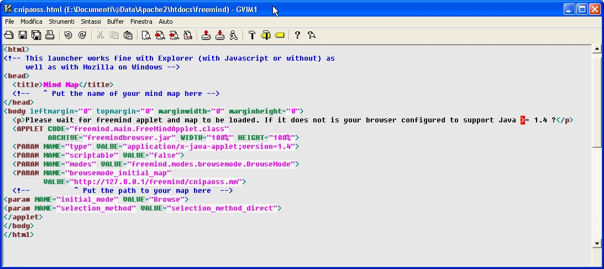
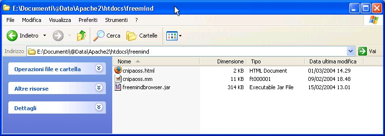

Ver 1.0 - 1 March 2004
Robert J. Alexander - Rome - Italy
(For any corrections or simple thanks 8-> my email is bob and my provider is ngi.it)
Please read the disclaimer before using this document.
Go to Sourceforge's Freemind file download page.
Please note that we want to download Freemind's applet and not the standalone application. This download is on the bottom half of this page in the section called "Freemind-Browser" the following Freemind Applet URL will show you ONLY the applet. Download the latest version (at the time of this writing rel. 0.7.1).

After you store this file where you want and unzip it you will see that it contains two files:
In the previous step you have taken notice of your Web's server DocumentRoot.
I personally like creating a freemind directory in it and use it to keep the applet, the HTML launchers and the maps.
Take the freemindbrowser.jar file and copy it, upload it or otherwise place it in this directory.
Now the last step you need to perform is to place a couple of corresponding files:
In this example my Freemind map file is called cnipaoss.mm and the HTML launcher cnipaoss.html
The launcher file can be easily tailored from a copy of the freemindbrowser.html you have recently unzipped.
So I copied this file into a new one called cnipaoss.html and modified it as follows:

If you compare it to the "original" freemondbrowser.html you will notice the following differences:
Save and exit.
So at the end you should have at least these files in a directory under your DocumentRoot:

Of course in the future you will have additional pairs of html and mm files.
So everything is ready and let's test our setup now.
Copyright © 2004 Robert Alexander - bob at ngi.it